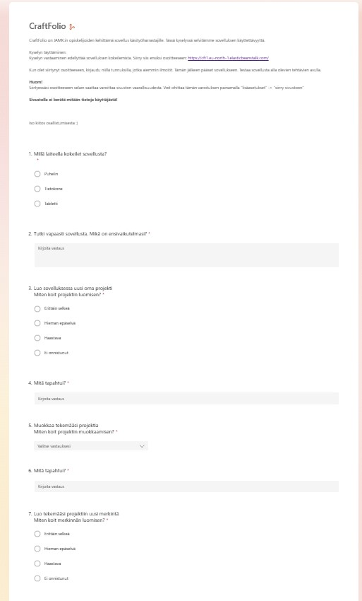
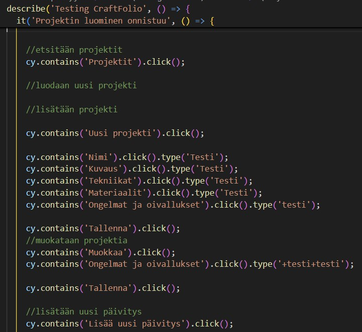

Sovelluksen testauksessa painotettiin käyttäjäkokemuksen ja saavutettavuuden testaamista. Tekninen testaaminen jäi vähemmälle.
Kysely
Projektin loppupuolella tein kyselyn sovelluksen potentiialisille käyttäjille, joille oltiin jo projektin alussa esitelty ideaa kyselyn muodossa. Kyselyn tavoitteena oli selvittää mahdollisten käyttäjien kiinnostusta sovellukseen sekä selvittää onko sovellus helppokäyttöinen ja saavutettava.
EndToEnd-testaus
E2E-testeillä testattiin projektin luominen, sen tarkastelu, poistaminen ja muokkaaminen. Lisäksi testattiin päivityksen/merkinnän luominen. Osa ominaisuuksista jäi testaamatta, koska sovelluksessa oli google login. Cypress ei salli ulkoisten ikkunoiden avaamista, jolloin kirjautuminen ei onnistunut. Onnsituneet E2E-testit tehtiin silloin kun kirjautuminen ei vielä ollut pakollinen vaan sovellukseen pääsi suoraan.
Mitä opin/reflektio: